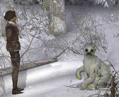

| 概要 | 地図 |
| 淡いヒント集 | ヒント集 | 的確なヒント集 |
| 攻略最短ルート |
| 場所選択に戻る |
雪山

ユーキーが吠えるので、川の向こう側へビーバーが逃げていってしまった。周囲をよく見ると、ビーバーがかじった木が横にある。もう少し、ビーバーにかじってもらえば木が倒れ、対岸へ移動できるかもしれない。 そこで、あなたはユーキーの気をそらす方法を探す必要がある。 
あなたのであった人物達が言っていたように、ユーキーは非有情に食欲旺盛だ。むしろ、食べることに夢中になれば他のことなどどうでもよくなってしまう。 祭壇に魚が供えられているので、これをうまく利用したいところだ。しかし、氷を砕くことはできない。別の方法を探そう。手元の「マッチ」を使うのだが、何が足りないだろうか。 
移動できるマップを注意深く探ろう。必要なものは必ず落ちている。

うまくユーキーの気をそらすことができただろうか?
| 次へ >> |
|
| 場所選択に戻る |
| 概要 | 地図 |
| 淡いヒント集 | ヒント集 | 的確なヒント集 |
| 攻略最短ルート |
Syberia II
| 目次へ戻る | ページの上部へ |